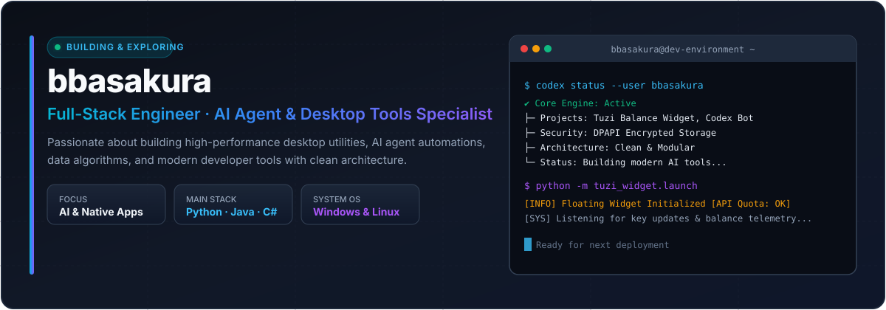
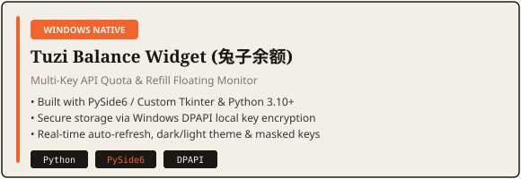

💡 核心理念与工程方向
- 🚀 桌面工具与自动化开发：专注于构建高性能、原生的 Windows 悬浮组件与跨平台实用工具。
- 🤖 AI 基础设施与 Agent 工具链：开发智能 AI Agent 工作流、多账号 Token 额度监控、模型代理路由与数据看板。
- ⚡ 安全架构与数据系统：重视本地数据隐私保护、Windows DPAPI 密钥加密存储、模块化设计。
开发者身份 : 全栈工程师 · AI 自动化与桌面应用开发者
所在地区 : 中国 (UTC+8)
常用操作系统 : Windows 11 / Linux (WSL2 / Ubuntu)
设计配色规范 : MoonInAI 社论风格 (纸张白 #F4EFE6 · 墨色 #1A1714 · 爱马仕橘 #F0652E)
| 项目展示 | 架构特色与核心功能 |
|---|---|
 |
Windows 原生 API 额度与加油包悬浮监控 • 支持 1–20 个 reseller Key 并发额度与到期时间查询 • 基于 Windows DPAPI 本地密匙加密保护 |